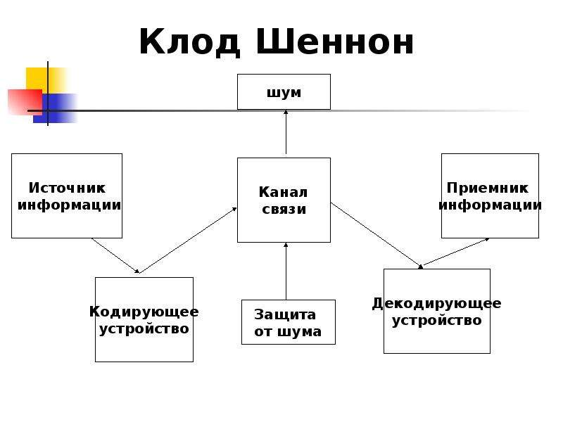
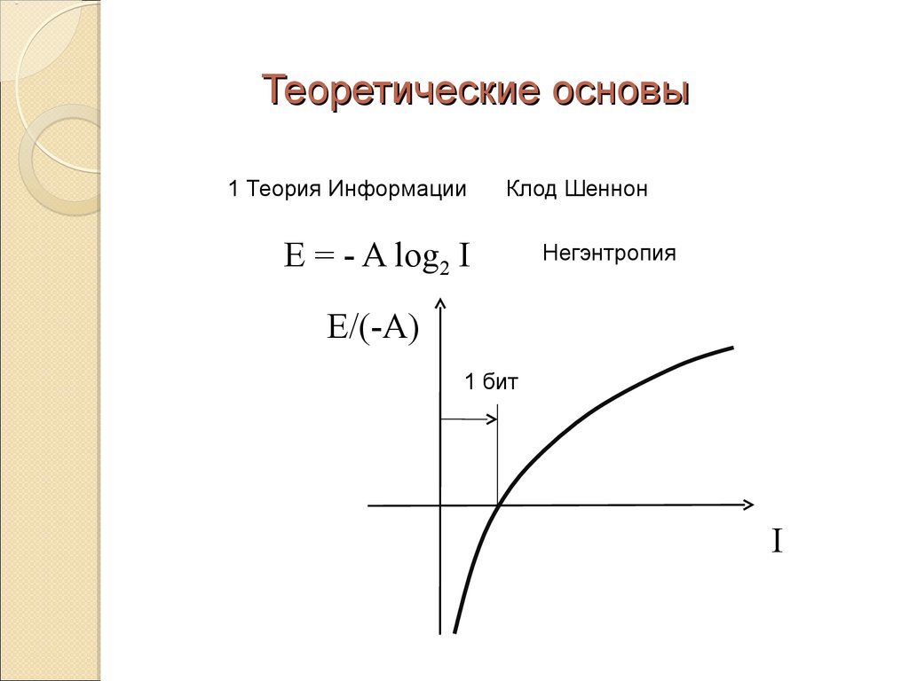
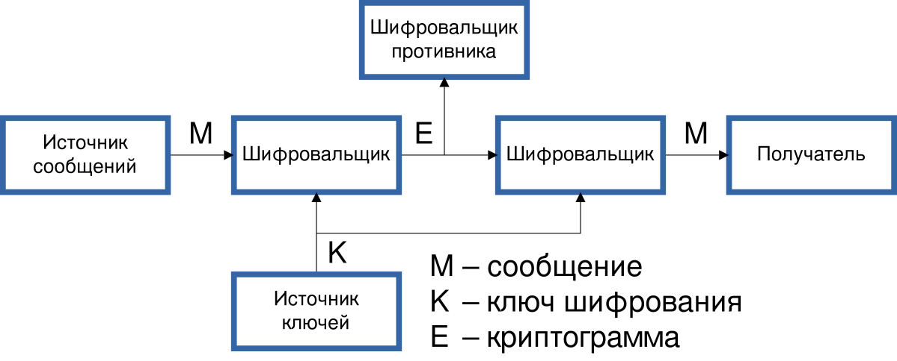

Основные достижения
— Клод Шеннон публикует свою знаменитую работу "Математическая теория связи".Основные достижения Клода Шеннона включают создание фундаментальных основ для цифровой связи и теории информации. Его теории легли в основу разработки современных компьютерных и коммуникационных технологий.
Цифровые схемы и логические операции
Шеннон использовал алгебру логики для анализа и упрощения цифровых цепей. Он предложил метод представления информации с помощью двоичного кода, что стало основой для разработки цифровых компьютеров.
Теория информации
В своей работе “Математическая теория связи”, Шеннон предложил понятие информационной энтропии, что позволило оценивать качество и количество передаваемой информации.
"Информация измеряется в битах, которые определяют количество возможных состояний системы." — Клод Шеннон
Вклад в криптографию
Шеннон также внес важный вклад в развитие криптографических методов. Его исследования в этой области помогли разработать алгоритмы шифрования, используемые для защиты данных в цифровых системах.
Наследие Клода Шеннона
Его идеи нашли применение в таких областях, как искусственный интеллект, робототехника и теория автоматов. Сегодня Клод Шеннон признан одним из величайших ученых в области вычислительной техники и теории информации.
- Разработал методы для анализа цифровых цепей и цифровых систем.
- Предложил термин "бит" как единицу измерения информации.
- Создал теорию информации, описывающую процессы передачи и сжатия данных.